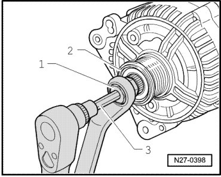
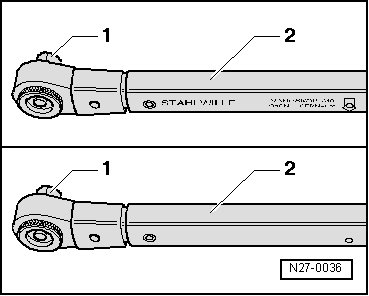
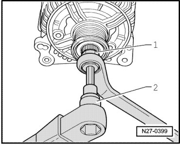

Generator Ribbed Belt Pulley
Generator Ribbed Belt Pulley
Special tools, testers and auxiliary items required
• Torque Wrench (V.A.G 1331/)
• Multi-point adapter (VAS 3400)
Removing
- Remove generator --> [ Generator ] Generator.
- Tighten the generator in a vise at the attachment points.
- Remove the protective cap from the free-wheeling belt pulley.
- Insert the multi-point adapter 3400 - 1 - with a box-end wrench into the free-wheeling belt pulley - 2 - of the generator. Then, insert a multi-point socket insert M10 - 3 - into the generator shaft.

- Loosen the threaded connection by rotating clockwise, while counter holding with the box-end wrench.
- Hold the free-wheeling belt pulley firmly by hand and rotate it on the generator drive shaft until the free-wheeling belt pulley can be removed.
Installing
Install in reverse order of removal, noting the following:
- First screw overrunning clutch pulley on generator driveshaft by hand until limit stop.
Torque wrench must be reassembled for installing overrunning clutch pulley as follows:
- Release the insert - 1 - and pull it from the handle - 2 -.

- Rotate the handle - 2 - of the torque wrench 180 degrees and re-insert the bit.
- Set the rotation direction of the torque wrench bit to "left."
- Counterhold multi-point adapter 3400 - 1 - using open end wrench 17 mm and tighten overrunning clutch pulley by turning generator drive shaft toward left using torque wrench - 2 -. The tightening specification is 80 Nm.

- Clip the protective cap onto the free-wheeling belt pulley.